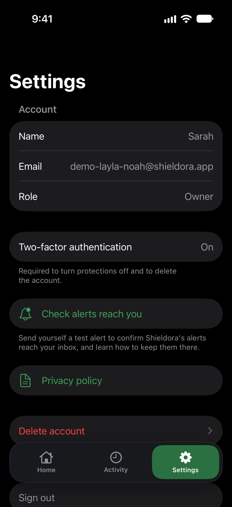

A filter a child can quietly disable isn’t protection. It fails without a sound, and nothing arrives to tell you it stopped. It happens on a screen in another room, and nothing reaches you. Most parents find out long after, if at all.
A notification lands on your phone.
When an adult site is blocked, when a browser is allowed, or when your child’s phone goes quiet, a notification lands on your phone with the child, the device and the time. You don’t have to go and check.
A phone going quiet usually just means it’s switched off, flat, out of signal, or that iOS has paused Shieldora’s background checks, so that one is a gentle heads-up after 24 hours, not an alarm. Screen Time being turned off is the one that matters. Shieldora tries to tell you straight away. If that alert can’t get through, the phone goes quiet, and 24 hours of silence always reaches you.
And it can’t be quietly removed first: there is no Shieldora screen that turns protection off, and lifting it in iOS Settings needs the parent’s Apple Account password, not the child’s passcode, not their Face ID.
What you’ll open on your own phone
The parent app isn’t finished yet. This is the design we’re building to, not a screenshot of working software, so treat it as where it’s heading rather than what you’d get today. It shows what Shieldora will do at launch. Some of it works now, and the rest, such as the alert when a site is blocked, lands before we open to families.


Activity across both children, Home, and each child's page with its recent alerts and controls.


What your child sees on their phone
No login, no dashboard, nothing to switch off. Just what a parent has set, and who to ask if something stops working.

Be the first to protect your family
Join the waitlist and we’ll email you when Shieldora is ready for your family’s devices.
No spam. We’ll only email you about Shieldora.
We collect your email address, the date, and the page and link you arrived from. We use it for one thing: to email you when Shieldora is ready. We don’t sell it or pass it on. How we handle your information.
What an alert tells you, and what it doesn’t
Every alert names three things: the child, the device, and the time. It never names the site on the lock screen or in email. In the app it names the site only if you turn that on for a child, and your child is told when you do.
- the child
- the device
- the time
What’s never in an alert: search terms, typed text, messages, browsing history, or screenshots. A block alert names the child, the device and the time. The site itself appears only in the app, only if you turn on more detail for that child, and only for 30 days. We don’t build a browsing history of your child’s sites for you to read.
Who’s behind this
Most parental controls fail the same way. The filter gets switched off, or a kid gets around it, and the parent is the last to know. Sometimes that’s weeks later, and by then the conversation they should have had is long overdue. Shieldora exists to fix that one problem: block adult sites, and make sure you get told when something is blocked or protection stops.
Shieldora is built by one person in Perth. No outsourced support, no data sold to anyone. If you have a question, email contact@shieldora.app and you’ll get a real reply.
Questions parents ask
What exactly do the alerts tell me?
The exceptions that matter: a site being blocked, Screen Time being turned off, the phone going quiet for 24 hours, or you allowing a non-Safari browser. Each comes with the child, the device and the time. Nothing about what your child searched or typed.
Do you see my child's browsing history or messages?
No. We don't collect search terms, typed text, messages, or a history of sites that weren't blocked. That's a deliberate line, not a feature we haven't built yet.
Can my child just turn it off?
No. There is no Shieldora screen that turns protection off, and the app can't be deleted. Lifting it means going into iOS Settings, where iOS asks for the parent's Apple Account password, not the child's device passcode or Face ID. And if protection is switched off, Shieldora tries to alert you straight away. If that signal does not get through, the phone falls silent, and silence that lasts 24 hours reaches you on its own, so a switch-off does not stay hidden.
Will you tell me what my child tried to visit?
Only if you turn on more detail for that child, with your second factor. Then the app shows the website address of each blocked site and whether it was classed adult or harmful content, kept for 30 days and deleted at once if you turn it off. Your child’s phone shows that this is on. Off, which is the default, a block alert names the child, the device and the time, never the site. Either way we never record searches, pages or messages, and never build a browsing history of the sites your child visits.
Will it catch everything?
No filter is perfect, and some content will get through. What we focus on is different and, we think, more useful: if the filtering stops running, Shieldora tries to tell you, and a phone that goes quiet for 24 hours will reach you on its own. That is the failure that actually leaves a child exposed, and the one most filters never mention.
How does the blocking actually work?
Shieldora uses filtering built into iOS, on your child's iPhone or iPad. The filtering happens on the device itself.
Which browsers does it cover?
Safari, including private browsing. Other browsers are blocked by default. You can allow one if your child needs it, and we'll warn you that content inside it isn't filtered.
What do I need to use it?
Your child’s iPhone or iPad needs to be on iOS 26.5 or later. That’s the version where Shieldora can watch for Screen Time being turned off, on top of noticing when the phone goes quiet. Your own phone can be on an older version. If your child’s device is behind, Shieldora asks you to update it before setting it up, rather than guard it in a way it can’t stand behind.
When can I get it?
Shieldora isn't released yet. Join the waitlist and you'll be among the first families we let in.